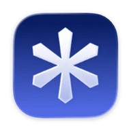
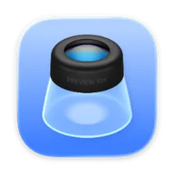
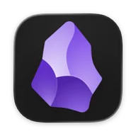
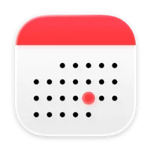
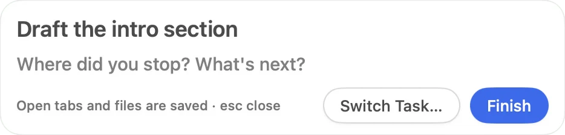
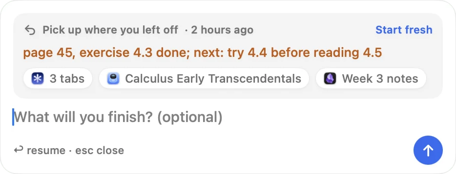
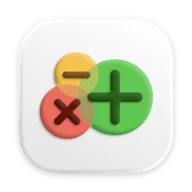
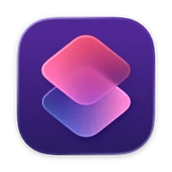
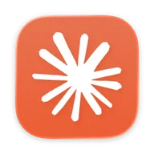
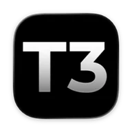

One hotkey, one task. The rest can wait.
Press ⌃⌥Space and pick a task. Only its apps stay visible and in the Dock, and your browser opens a fresh window. When you finish, everything goes back the way it was.
Interactive demo. Type, use ↑↓ and ↩, or press esc.Interactive demo. Tap a task.
Start, switch, finish. Your Mac follows.
- 01
Focus
The task's apps open. Every other app is hidden, not quit, and the Dock shows only the task's apps.
- 02
Resume
Pick the task again and ↩ reopens its tabs, documents, Obsidian note and the note you left. Start fresh skips it.
- 03
Restore
Finish brings back the apps you had, quits the ones TaskDock opened so they can still ask to save, and restores your exact Dock.
Focus
Your Dock, down to one task.
Pick a template and only its apps stay in the Dock. Everything else is hidden, not quit, so nothing loses its place.




Hidden, not quit.
Apps that were open before the task stay running. They come back when you finish.
Shortcuts on start and finish.
Each template can run an Apple Shortcut when it starts and another when it ends.
A fresh browser window.
With the extension, your browser opens a new window and unloads the other windows' tabs until you finish.
Resume
Pick up where you left off.
Finishing or switching saves what the task had open. Next time, ↩ reopens it all.


Browser tabs.
The task window's tabs are saved as they change, so they survive the browser quitting.
Documents and notes.
Files open in Preview, TextEdit, Pages and other scriptable apps, and the note open in Obsidian. Preview reopens a PDF at the page you were on.
Your own note.
Finishing asks “Where did you stop? What's next?” and shows your answer next time.
Agents Next release
Waiting on an agent? Start something else.
When an AI agent is still working 2 minutes after your prompt, TaskDock offers another task. The agent's task is parked, and a banner calls you back.
You stay in your task while Claude Code hooks tell TaskDock the chat started working. No prompt text or code leaves the hook. The menu bar shows ⧗.
The picker opens with “Agent is on it” and “What will you do meanwhile?”. With several chats it reads “3 agents are on it”.
Its apps are hidden, never quit, while you work on something else.
A banner names the chat and its task: “Done after 23 min”. The menu bar shows ✓, or ! when an agent needs you.
The banner takes you back to the task and the chat's app.
Works with the tools you already use.
Phi Spaces: Switches Phi to the Space named like the template, and creates it with the template's emoji if it's missing.
Every integration is optional.
- Phi Spaces
Switches Phi to the Space named like the template, and creates it with the template's emoji if it's missing.

AeroSpaceRemembers each app's workspace when you finish and moves the windows back when you start.
- Browser extension
Opens a fresh window and unloads the other windows' tabs. Chromium 116 or later.
- Calendar
Suggests the event happening now, or in the next 15 minutes, at the top of the picker.

Apple ShortcutsRuns a Shortcut when a task starts and another when it ends.

Claude CodeNext release: hooks tell TaskDock when an agent works, finishes or needs you.

T3 CodeNext release: reads T3's own records, read-only, for every provider.
Under the hood
No Dock API, so it treats yours carefully.
- Dock
- macOS has no public Dock API. TaskDock rewrites the
com.apple.dockpreferences and restarts the Dock. Changes are queued, wait for the Dock to settle, and are read back and retried. - Safety
- The pre-task Dock is saved before anything changes. If TaskDock quits mid-task, reopening it resumes the task, so Finish still restores. To restore your original Dock by hand:
defaults import com.apple.dock \ ~/Library/Application\ Support/TaskDock/dock-original.plist \ && killall Dock - Hotkey
- Carbon
RegisterEventHotKey, so the hotkey needs no Accessibility permission. - Browser bridge
- A loopback-only WebSocket on 127.0.0.1:47123 that accepts
chrome-extension://origins, so there's no per-browser native-messaging setup. The Manifest V3 extension unloads tabs withtabs.discard. - Privacy
- All data stays on your Mac. Nothing is sent over the network.
- Tests
- XCTest unit tests, extension tests with
node --test, and end-to-end scenarios that drive the real app. - App
- SwiftUI and AppKit,
MenuBarExtra, and a borderless panel for the picker. No third-party dependencies.
Known limits: hidden apps keep their Dock icon, the Dock flickers for about a second, the hotkey is fixed, and builds are ad-hoc signed, not notarized. All limits in the README
Build it from source.
./scripts/build.sh
open build/TaskDock.appEarly software. Source only, ad-hoc signed, not notarized. It rewrites your Dock preferences, so read Safety and undo first.